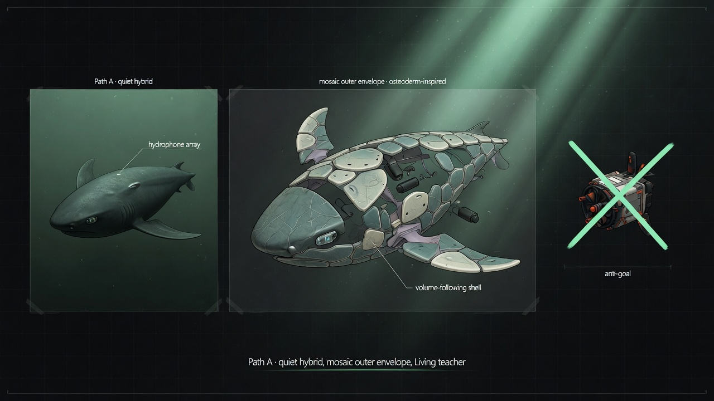
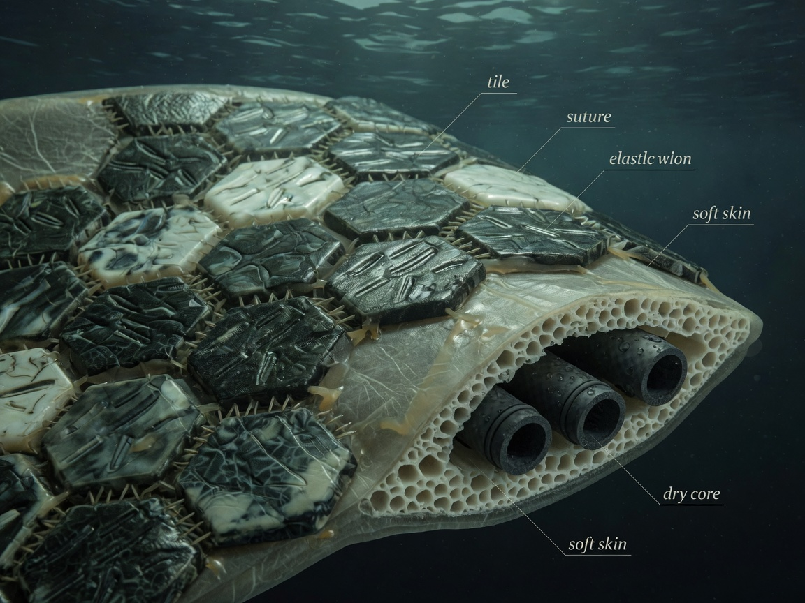

Stay near marine life longer and quieter than a thruster box. Measure before
biomimetic chrome. Lab plan is locked — this page is only for study.
Job (locked)
Boat-deployable · quieter + more efficient motion first · then multi-hour
loiter · then easy deploy. Hydrophone + camera. No free lunch. No animal
harassment.
What to test first
Tank · sparse thrust vs good small prop
Noise + power at slow survey and ~1.5 m/s.
Kill: can’t beat baseline on noise at useful speed.
Same rig · hydrophone placement
Two or more mic positions while the thrusters run and at loiter.
Kill: still too loud to listen while loitering.
Hover power
Hold station without continuous prop wash.
Kill: burns the multi-hour battery.
Riblet coupons
Right groove size for our speeds · then fouling / clean test.
Kill: more drag or can’t clean between missions.
Picture board

Path A concept board · form and co-presence intent (study visual, not a product claim).

Leatherback osteoderm study · secondary (later depth). Not first-hull work.
30-minute study
0–5This page + the short study card markdown
5–15Experiment plan — rank table + top protocol only
15–25Four briefs: §1 problem + §5 kill only
25–30Papers note theme index — pick one paper for later